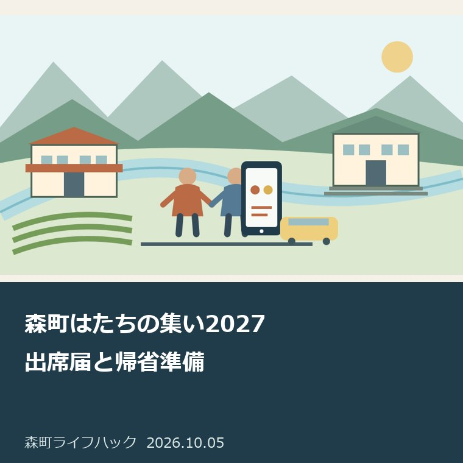
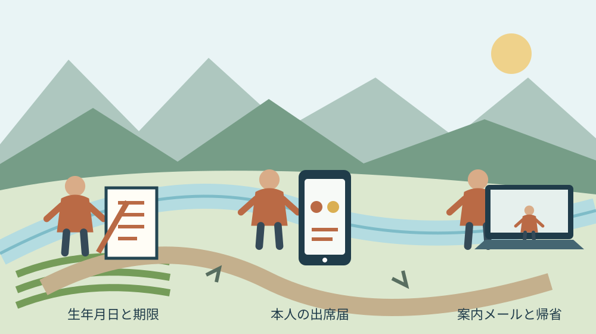

月曜・手続きと家族の段取り
森町はたちの集い2027｜出席届と帰省準備

Q. 森町を離れて暮らしていても、出席届はどう準備する？
A. 2027年1月10日の森町はたちの集いは、2006年4月2日～2007年4月1日生まれで出席を希望する方が対象です。現在の町公式案内は出席届を11月8日までに提出し、12月中旬の案内メールを確認する流れです。町外の本人も、家族と生年月日、届出、帰省予定を分けて確認します。
出席届の現行案内を先に確認する
森町の「令和9年 森町はたちの集いについて」は、2026年10月5日の確認時点で、出席の届け出が必要と案内しています。届け出期限は2026年11月8日（日曜日）です。本文に出席届け出フォームへのリンクがあり、電子申請以外を希望する方には社会教育課への連絡を求めています。
2027年のはたちの集いを準備する町の職員、実行委員、会場を支える人の手間は、当日の数時間だけではありません。本人に案内を届け、来場者を迎えるまでの準備があります。私は、参加する家族の側でも、本人の届け出と連絡先の確認を済ませて、確認の行き違いを減らすのがよいと考えます。
今回の公式ページは、表示更新日も2026年10月5日です。事前の調査メモにあった「10月15日から受付開始」という旧案内とは、届け出の説明が変わっています。この記事では現在の本文を優先します。古い画面の保存や検索結果だけを見て、受付開始を待ち続けないよう注意してください。
私は、申込みを進める際には森町の式典案内へ戻る方法を勧めます。検索で見つけたフォームらしい画面へ直接個人情報を入れるより、町のページにあるリンクから進む方が、年度と行事を照合できます。入力する前に「令和9年」を確かめます。
通知と参加対象を混同しない
令和9年森町はたちの集いの対象は、2006年4月2日から2007年4月1日生まれで、出席を希望する方です。現在の公式本文は、対象の説明に森町への現住民登録を条件として書いていません。町外で暮らす本人も、まず生年月日を照合し、個別に迷う事情があれば社会教育課へ確認できます。
私は、家族が「森町に住んでいないから参加できない」と先に決めない方がよいと考えます。進学や就職で住所が変わったことと、式典の参加対象は別の確認です。親の家へ届いた郵便の有無だけで判断するのでなく、本人が町の対象欄を読めるよう、公式ページのリンクを一つ送るところから始めます。
意外なのは、現在の案内状の送り方がメールであることです。町は、届け出をした方に12月中旬に案内状を送ると説明しています。実家の郵便受けを見ている家族がいても、それだけでは案内の確認になりません。本人が受信する連絡と、家族が手伝う帰省の準備を分けておく必要があります。
以前の案内にあった住民登録日や通知ハガキの説明は、今回確認した現行本文にはありません。その情報を、新しい届け出手順の必須条件として残しません。住所や町との関係についてフォームでどの項目を入力するかは、実際の申請画面に従います。この記事では入力項目の全てを確認できていません。
本人が届け出るための準備
森町の出席届け出は、町公式の式典ページに案内されたフォームから行う仕組みです。電子申請以外を希望する場合の連絡先は、社会教育課社会教育係、電話0538-85-1112です。オンラインで届け出が難しい事情がある方は、自己流で別の申請書を作る前に、その窓口へ方法を尋ねます。
私は、本人の氏名と生年月日、普段読めるメール、式典への参加希望を先に手元で確認する方法を提案します。これは町が公表した必要入力項目の一覧ではなく、家族の準備用のメモです。実際の画面で求められる情報を確認してから入力し、分からない欄を想像で埋めないようにします。
親のメールを使えば管理しやすいと考える家族もいると思います。ただ、私は本人が案内を読める状態を先に作る方がよいと考えます。申請上どの連絡先を使えるかは画面や町の案内で確認します。家族が操作を手伝う場合も、入力内容を本人が見て、連絡を誰が読むかを合意してから送信します。
届け出の後は、表示された完了画面や届いた控えを保存するのが私の提案です。確認できないうちに同じ情報を何度も送ると、家族もどの申請が有効か分からなくなります。控えの方式や訂正・取消しの方法は未確認です。変更が必要な場合は、届け出た日と内容を説明して町へ問い合わせます。
12月中旬の案内メールに備える
森町は、届け出をした方へ12月中旬にメールで案内状を送るとしています。迷惑メール防止や受信制限を設定している場合は、「kyo_syakai@town.shizuoka-mori.lg.jp」を受信できるようにする案内です。送信直後の申請控えと、12月に届く式典の案内は、同じ連絡だと思い込まないようにします。
私は、届け出が終わったら、次の確認日を12月中旬に置く方がよいと考えます。毎日気にして待つより、予定表に「案内メールを確認」と書き、受信箱と迷惑メール欄を見ます。本人が忙しい場合でも、家族は確認を頼むところまでにとどめ、私用メールを無断で開く役割にはしません。
メールが見当たらないときは、届け出が済んでいるか、どの連絡先を入力したか、受信設定はどうかを分けて確認します。私は、情報をそろえてから町へ尋ねる方が、短い電話でも事情が伝わると考えます。送信時刻や必ず届く日までは公表されていないため、特定の日に届かないだけで未受付とは断定しません。
式典の案内を家族へ共有する場合、申請番号や本人情報を広く転送する必要はありません。私なら、日時、受付、会場、送迎の希望など、その家族が動くための部分を選びます。友人へ送る情報も同様です。連絡を共有することと、本人の個人情報を全員へ配ることを分けて考えます。
受付9時10分から帰省を逆算する
令和9年森町はたちの集いは、2027年1月10日（日曜日）、森町文化会館大ホールで午前9時45分から始まります。受付は午前9時10分からです。現在の町公式案内は、当日の会場と駐車場の利用を正午までとしています。開始時刻だけでなく、受付と会場を離れる時間を帰省の予定に入れます。
私は、帰省日を決める前に、本人の出発地から受付までの移動を紙に並べる方法を勧めます。列車、駅から会場、着替え、荷物の置き場を別に書きます。この記事は1月10日の交通時刻表を確認していません。前年の便をそのまま使わず、予約する段階で交通事業者の現行案内を確かめます。
家族の車で送るなら、運転する人と迎える人、連絡を受ける人を一緒に決めます。私は、午前9時45分に着けばよいという組み方にはしません。受付や身支度の時間が残らないためです。一方で、町が指定していない早朝の到着時刻を一律に求めることもせず、本人の移動条件から余裕を考えます。
衣装や写真撮影、会食の予定は、式典の参加条件と区別します。町公式は、床を傷つける靴底に金具等が付いた履物の入場を断るとしています。本人の希望する服装を先に否定するのでなく、会場で使える履物かを確認します。写真撮影の予約をしたから式典への届け出も済んだ、とは扱いません。
良い点｜本人へ案内が届く仕組み
森町の現行案内は、届け出期限、案内状の送付時期、連絡先を同じページに置いています。私は、町外に住む本人が自分で読める入口を持てる点を評価します。親が役場へ行かないと参加の見通しがつかめない形より、離れて暮らす本人と家族が同じ本文を確認しやすいからです。
電子申請以外を希望する方への連絡方法も案内されています。私は、スマホだけで最後まで進めない人に相談の入口が残っている点も良いと考えます。インターネットが得意かどうかで参加の相談を諦める必要はありません。ただし、別の届け出方法の具体的な内容は社会教育課へ確認する必要があります。
座席への配慮が必要な方は、届け出の記載欄にその旨を書くよう町が案内しています。私は、当日に困ってから伝えるより、準備の段階で必要なことを知らせられる点を評価します。具体的にどの座席や支援を用意できるかは個別の相談です。配慮の記入だけで希望どおりの対応が確約されたとは扱いません。
式典を支える協賛と、本人の出席届け出は別の手続きです。町や協力する事業者が祝う場を整える努力に敬意を持ちつつ、家族は本人の参加の手順へ戻れます。協賛側の条件についてははたちの集い協賛の記事で扱いました。今回は出席届に範囲を絞っています。
注文したい点｜家族だけで手続きを抱えない
森町のはたちの集いを準備する家族には、届け出以外に帰省、衣装、送迎、家の受入れという仕事があります。私は、町の案内が整っていることと、各家庭が無理なく参加できることは別だと考えます。実家にいる一人だけが全てを手配する形にすると、祝うための準備が負担へ変わってしまいます。
一事業者として案内に望むのは、更新した手順を本人が見分けやすくすることです。今回は旧情報と現行本文が違いました。私は、新しい期限や案内の送り方が見出しで分かると助かると考えます。ただし、町へ注文を付ける前に、記事を書く側も保存した情報を使い続けず、現在の本文へ戻る責任があります。
本人の出席希望がまだ固まっていない場合は、その迷いを家族が消さない方がよいと考えます。友人との予定や仕事の調整が残ることもあります。私の提案は、参加を決める人は本人、送迎や宿泊を支える人は家族と役割を分け、期限までに確認する日を合意することです。家族の都合だけで代理決定しません。
私には、メール中心の案内が全ての家族に扱いやすいかは分かりません。離れた本人には便利でも、親が状況を把握しにくい場合があります。だからこそ「申し込んだか」「案内を読んだか」「帰る日が決まったか」を別々に尋ねる形を勧めます。一つの返事で準備の全工程を済んだことにしません。
対案・結論｜今日の確認を一枚にする
森町はたちの集い2027へ向けた今日の一歩は、本人の生年月日と現行の届け出期限を家族で照合することです。まず2006年4月2日から2007年4月1日という対象期間を読み、11月8日を予定表へ入れます。現在の町公式ページのURLも一緒に保存し、旧案内ではなく同じ本文を見られる状態にします。
私なら一枚のメモに、本人の参加希望、届け出状況、案内メール、帰省、送迎を五つの欄で置きます。各欄に確認する人と次に見る日を書きます。これを町へ提出する必要はありません。本人が届け出を進め、家族は必要な支援だけを受け持つための、家庭内の段取り表として使います。
役場へ問い合わせる場合は、担当課と質問を先に絞ります。期限内の訂正、電子申請以外の届け出、座席への配慮などを一度に曖昧な言葉で尋ねず、必要な内容を分けます。一般的な窓口利用の考え方は予約の要否で相談を分ける記事も参考になります。
家族が窓口の時間を調べるときは、お盆週の役場時間を確認した記事の日時を、1月の開庁日へ流用しないでください。過去記事は窓口と日付を分けて読む例です。今回の届け出に関する個別の連絡は、社会教育課の現行案内とその日の受付を確認して行います。

帰省する家と送迎の負担を分ける
町外で暮らす本人の帰省は、森町の家を使う家族にも準備を生みます。私は、宿泊するか、日帰りか、荷物を預けるかを早めに確認する方がよいと考えます。普段誰も住んでいない実家へ泊まる計画なら、建物を使える状態かの確認も必要です。式典の日だけで家の状態まで判断しません。
私の提案は、使う部屋、寝具、暖房、水回りを確認する人を決めることです。掃除や買い物を一人へ寄せるのでなく、本人が持参する物と家族が準備する物を分けます。これは不動産の売却や家の将来を決める話ではありません。今回の帰省を安全に受け入れるため、必要な範囲に限った確認です。
町公式は酒気帯びでの来場、敷地内の飲酒・喫煙、危険物や酒類の持込みを断っています。駐車枠以外の駐車や危険運転等も禁止しています。私は、祝い方の好みの問題にせず、参加する本人と運転する家族が共に読む事項だと考えます。会場の担い手へ安全対応の負担を押し付けないためです。
帰省の費用は、交通、衣装、写真、宿泊など項目ごとに相談する方がよいと考えます。私はこの記事で、家族の支出額や衣装の相場を確認していません。相場らしい数字で一律に予算を決めず、本人の希望と家計を並べます。祝うことと、高い費用を必ず掛けることを同じ意味にはしません。
大石の視点｜祝う日の前に段取りをそろえる
私は大石浩之（磐田市／不動産業）です。森町の外から土地や家の実務を考える立場として、節目に家族が町へ戻る機会には可能性を感じます。町の人が準備する場を、本人が無理なく使える状態にしたい。ここに書くのは私の意見であり、はたちの集いの参加相談を実際に受けた体験談ではありません。
私は、祝う日の準備は、気持ちより先に「誰がいつ何をするか」で整えると考えます。町の開催準備を尊重するからこそ、届け出を家族の誰かが済ませただろうという状態にしない。本人の参加希望と提出の確認を分ける。これが、今回の記事で私が言い切りたい判断です。
一方で、本人へどこまで任せ、家族がどこまで手を貸すかの正解は、私にも一つには決められません。仕事、学業、端末の使い方は人ごとに違います。私は、全てを親が代行する案内にも、全てを本人の自己責任で片付ける案内にもしたくありません。手伝う場所を本人と決めることから始めます。
今日できる確認は小さくて十分です。家族が公式ページを開き、本人と生年月日を照合し、11月8日までに届け出を確認する日を決めます。申請後は12月中旬のメール、1月10日の受付へ進む。森町に残る家族も町外の本人も、自分の担当を説明できる状態を、今日の成果にします。
よくある質問
森町はたちの集い2027｜出席届と帰省準備について、対象、期限、確認の入口を3問で整理します。回答は2026年10月5日に確認した公表本文に基づきます。
町外に住んでいても出席できますか？
町公式は2006年4月2日から2007年4月1日生まれで出席を希望する方を対象とし、現行本文の対象欄に現住民登録の条件を記載していません。町外の本人も生年月日を照合し、関係や個別事情で迷う場合は社会教育課へ確認してください。参加には11月8日までの届け出が必要です。
出席届の締切と案内状はいつですか？
2026年10月5日に確認した現行案内は、届け出期限を2026年11月8日、案内状の送付を12月中旬のメールとしています。旧案内の受付開始日を待つのでなく、町公式の出席届け出フォームへ進んでください。受信制限がある場合は町が指定するメールアドレスを受信できるよう確認します。
スマホで届け出できない場合はどうしますか？
町は電子申請以外の届け出を希望する方へ、社会教育課への連絡を案内しています。社会教育係の電話は0538-85-1112です。方法や必要書類をこの記事で断定せず、窓口へ確認してください。家族が入力を手伝う場合も、本人の希望、入力内容、案内メールを読む人を一緒に確認します。
森町文化会館の「ご利用案内」は、発熱や体調不良時の来館・来場を控えること等を案内しています。施設を借りる主催者向けの使用許可申請と、はたちの集いに参加する本人の出席届は別の手続きです。家族が会館の予約画面へ進んで、出席届も済んだと取り違えないようにします。
参考にした公式情報
- 令和9年 森町はたちの集いについて／静岡県森町（2026年10月確認・本文照合日10月5日）
- ご利用案内／静岡県森町（2026年10月確認・本文照合日10月5日）
最終確認日：2026-10-05
制度、期限、数値、画面、開催内容は変更される場合があります。最新の公式案内を確認してください。個別の法律・医療・税務・登記等の判断は、担当窓口や各分野の専門家へ相談してください。